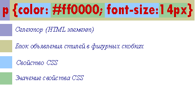

Глава 1
В этой главе речь пойдет о том, как внедрить CSS в документ HTML, то есть связать стилевое описание элемента непосредственно с самим элементом, каким либо HTML тегом.
Осуществить данную задачу можно тремя способами:
Давайте более подробно рассмотрим каждый вариант, а заодно познакомимся с правилами синтаксиса написания CSS.
Практически каждый HTML тег имеет атрибут style, который говорит о том, что к этому тегу применяется некое стилевое описание.
Пишется так:
<p style=""> это параграф с индивидуальным стилем </p>Всё что будет написано между кавычками атрибута style и будет являться стилевым описанием для данного элемента, в данном случае элемента <p>
Ну например:
<p style="color: #ff0000; font-size:12px"> это параграф с индивидуальным стилем</p>В данном случае мы указали, что этот параграф должен отображаться красным цветом и иметь размер шрифта в 12 пикселей. В последующих главах я подробно расскажу о том что написано в кавычках , сейчас же речь идет о том как применить CSS к какому либо HTML тегу.
По такому же принципу можно указать индивидуальный стиль практически для каждого HTML элемента.
Пример:
Но еще раз повторюсь такой способ внедрения CSS хорош лишь в том случае если требуется задать определенный стиль малому числу HTML элементов.
Для того, что бы описать необходимые элементы одновременно на всей странице в заголовок HTML документа внедряют тег <style> </style> (не путайте с одноименным атрибутом) в котором и происходит описание нужных нам элементов.
Взгляните на пример, ниже к нему будут комментарии.
Как видно из примера мы добились точно такого же результата что и в первом случае только теперь мы не прописываем каждому элементу стиль индивидуально, а вынесли его в "голову" документа тем самым указав что все заголовки <h1>,<h2> - будут синими а параграфы <p> - красными. Представьте как мы облегчили бы себе работу будь на странице сотня таких параграфов и штук пятнадцать заголовков, да и сам документ стал меньше весить за счет "удаления" всех повторяющихся стилевых описаний для каждого отдельно взятого элемента.
Теперь обещанные комментарии:
Тег <style> принято внедрять в заголовок HTML документа между тегами <head></head>.
Атрибут тега <style> type - сообщает браузеру, какой синтаксис использовать для правильной интерпретации стилей. Для правильной интерпретации браузерами CSS значение type (MIME тип данных) должно равняться text/css.
Внутри тега <style> </style> идет непосредственное объявление стилей тех или иных HTML элементов согласно следующему синтаксису:
Если в блоке объявления стилей указывается несколько свойств элемента, то они между собой разделяются точкой с запятой.
Долго ли коротко ли, подошли мы к главному, на мой взгляд, достоинству CSS, а именно возможности выносить все сведения касающиеся дизайна сайта в отдельный внешний файл.
Итак, открываем блокнот (или другой редактор) и пишем в нем следующий текст:
О том, что это такое странное мы написали, постараюсь подробно рассказать в последующих главах этого учебника.
Далее сохраняем этот небольшой файлик с расширением *.css (обычно файл со стилями называют style.css).
Все! файл со стилевым описанием создан! Теперь осталось совсем чуть чуть, а именно заставить нужные страницы нашего сайта черпать информацию с этого файла.
Делается это с помощью тега <link> (связь). Тег <link> многоцелевой и служит для "связывания" HTML документа с дополнительными внешними файлами, обеспечивающими его должную работу. Тег <link> является своего рода ссылкой, только предназначенной не для пользователей, а для программ обозревателей (браузеров). Так как <link> несёт в себе исключительно служебную информацию он располагается в заголовке HTML документа между тегами <head></head> и не выводится браузерами на экран.
Тег <link> имеет атрибуты:
href - Путь к файлу.Так как мы подключаем в качестве внешнего файла каскадную таблицу стилей, то наша служебная ссылка приобретает следующий вид:
<link rel="stylesheet" href="mystyle.css" type="text/css">Повторюсь, что бы уж точно развеять возможные недопонимания. Атрибуту rel присваиваем значение stylesheet так как подключаем в качестве внешнего файла каскадную таблицу стилей, указываем путь к файлу css (в этом примере файл называется mystyle.css и лежит рядом с документом HTML в котором прописывается данная ссылка) так же указываем, что данный файл текстовый и содержит в себе стилевое описание type="text/css"
Теперь вставляем эту строчку в заголовки страниц нашего сайта и наслаждаемся результатом..
Пример:
В примере выше, "сайт о слонах", на данный момент, имеется три страницы, каждая из которых связана с одним единственным внешним css файлом - mystyle.css. Таким образом, мы значительно его "разгрузили" и сделали дизайн всего сайта "мобильным". Представьте сколько б килобайт мы выиграли, будь на этом сайте сотня полноценных страниц!? А также, сколько б времени сэкономили, если бы нам понадобилось изменить что-либо в его дизайне!?
О том как присвоить какой либо группе идентичных элементов стиль отличающийся от основного стиля данного элемента, сделать отдельный класс элементов, читайте в главе Классы и идентификаторы.
В этой главе мы рассмотрели три способа внедрения CSS в HTML документ. Какой же лучше использовать?